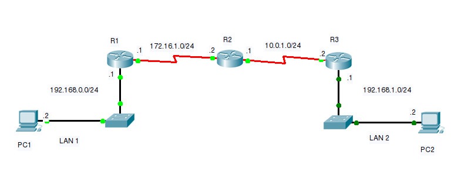
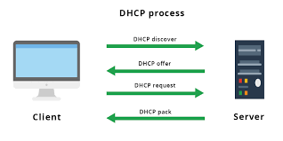
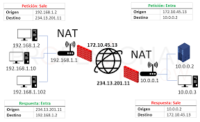

Los protocolos de red son aquellos protocolos configurables dentro de una red para generar el correcto direccionamiento de datos dentro de una red.

Enrrutamiento
El enrutamiento es el proceso de selección de rutas en cualquier red. Una red de computación está formada por muchas máquinas, llamadas nodos, y rutas o enlaces que conectan dichos nodos. Podemos reconocer dos tipos de enrutamiento principales
Estatico
En el enrutamiento estático, un administrador de red utiliza tablas estáticas para configurar y seleccionar manualmente las rutas de red. El enrutamiento estático es útil en situaciones en las que se espera que el diseño o los parámetros de la red permanezcan constantes.
Este puede hacerse de 2 formas:
ip route 172.16.2.0 255.255.255.0 172.16.4.2
O
ip route 172.16.3.0 255.255.255.0 S0/0/1
Dinamico
El Enrutamiento dinámico, también llamado enrutamiento adaptativo, es un proceso en el que un enrutador puede reenviar datos a través de una ruta diferente para un destino determinado en función de las condiciones actuales de los circuitos de comunicación dentro de un sistema.
Existen dos tipos de principales enrrutamiento dinamico:
Vector Distancia: Este protocolo se beneficia del uso de vectores para poder saber cuál es la distancia que hay en una ruta. Implica un proceso pausado que dependerá del tamaño de la red y del sistema. No requiere grandes conocimientos para realizar su configuración, siendo uno de los protocolos más utilizados debido a la sencillez que implica su optimización. Cuando ya está funcionando el protocolo se dedica al envío de la tabla del enrutamiento, ocupándose de ello a través de sistemas multicast o broadcast dependiendo del caso. Por ejemplo:
Rip V1
Rip V2
IGRP
EIGRP
Estados de Enlace: Este es otro de los protocolos principales de los que tenemos que hablar y saber cuando nos referimos al enrutamiento dinámico. Incluye los correspondientes a OSPF e IS-IS, destacando por ser más rápidos y por mantenerse actualizados de una manera distinta, mucho más dinámica y funcional. Son protocolos más eficientes y aprovechan la red con una mayor capacidad, pero esto también significa que es más complicado trabajar con ellos. Debemos tener una formación adecuada a la hora de conseguir configurarlos y exprimir sus posibilidades. Por ejemplo:
OSPF
SIS-SIS
BGP
DHCP
El Protocolo de configuración dinámica de host (DHCP) es un protocolo cliente-servidor que proporciona automáticamente un host de protocolo de Internet (IP) con su dirección IP y otra información de configuración relacionada, como la máscara de subred y la puerta de enlace de predeterminada.

NAT-PAT
La traducción de direcciones de red, también llamado enmascaramiento de IP o NAT, es un mecanismo utilizado por routers IP para cambiar paquetes entre dos redes que asignan mutuamente direcciones incompatibles. Consiste en convertir, en tiempo real, las direcciones utilizadas en los paquetes transportados.

Por otro lado, Port Address Translation (PAT) es una característica del estándar NAT, que traduce conexiones TCP y UDP hechas por un host y un puerto en una red externa a otra dirección y puerto de la red interna. Permite que una sola dirección IP sea utilizada por varias máquinas de la intranet.